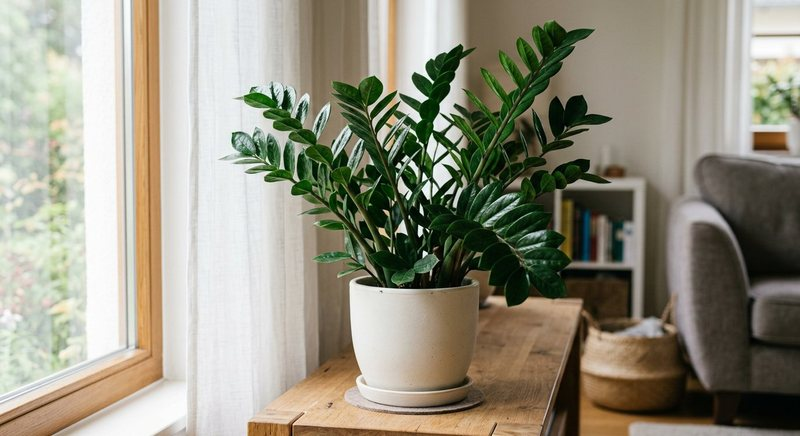

Виды растений · 5 мин чтения
Удобрение для замиокулькаса: как подкармливать долларовое дерево
Замиокулькас растёт медленно и запасает влагу в корневищах и основаниях черешков. Поэтому редкий новый побег — не повод увеличивать дозу удобрения: сначала оцените свет, полив и состояние подземной части.
Материал обновлён 24.10.2026 · Справочная информация, не заменяет инструкцию на упаковке.

Медленный рост — норма, а не сигнал увеличить дозу
Новый побег замиокулькаса появляется не каждую неделю: растение сначала развивает корневища и корни, а затем выпускает сложный лист. В полутени оно может долго сохранять декоративный вид почти без прироста. Это выживание, а не обязательно дефицит питания. Если горшок стоит далеко от окна, удобрение не создаст свет для фотосинтеза и будет накапливаться в медленно просыхающем субстрате.
Ориентируйтесь на здоровый новый рост при ярком рассеянном свете. Зимой в обычной квартире замиокулькас нередко делает паузу; в это время важнее не перелить корневища. Общий сезонный принцип совпадает со статьёй о частоте подкормок: график подчиняют активности растения и инструкции конкретного средства, а не желанию ускорить вид.
Свет, горшок и полив проверяют перед подкормкой
Для заметного роста замиокулькасу нужен яркий свет без длительного жёсткого солнца на листьях. Субстрат должен просыхать между поливами на существенную глубину, а горшок — иметь свободный сток. Слишком большая ёмкость после пересадки дольше держит мокрую зону вокруг корневищ, поэтому размер увеличивают умеренно и по фактическому кому корней.
Проверяйте не только верхний сантиметр: вес горшка и влажность на глубине дают более честную картину. Если субстрат долго остаётся холодным и мокрым, подкормку откладывают и исправляют режим. Жёлтый мягкий черешок у основания чаще требует проверки на перелив и гниение, а не дополнительного питания.
Похожая осторожность нужна и толстянке, которая запасает воду уже в листьях и стеблях. Оба растения легче переносят паузу в питании, чем постоянный раствор в мокром субстрате, но режим света и форма роста у них различаются, поэтому графики не копируют буквально.
- есть молодой побег или растение явно возобновило рост;
- субстрат не мокрый и не имеет затхлого запаха;
- горшок не стоит в воде внутри кашпо;
- после пересадки учтена стартовая заправка нового грунта;
- дата предыдущего внесения записана.
Когда и как вносить жидкое удобрение
Используйте средство, подходящее комнатным декоративно-лиственным растениям, и разводите его точно на фактический объём воды. Раствор распределяйте по субстрату, а лишнее из поддона убирайте. Не пытайтесь компенсировать медленный рост двойной концентрацией: замиокулькас расходует питание медленно, а соли остаются в горшке. Точный расчёт удобно сверять с руководством как развести жидкое удобрение.
Семяздрав заявлен продавцом для комнатных растений и цветов, но применение к конкретному экземпляру всё равно определяют актуальная этикетка и состояние корней. Если грунт недавно заменён и уже содержит питание, первая жидкая подкормка сдвигается по инструкциям субстрата и удобрения. Опрыскивание листьев не заменяет полив и допустимо только при прямом указании способа производителем.
Пересадка, соли и причины пожелтения
Замиокулькас пересаживают, когда корневища и корни действительно освоили горшок или субстрат потерял структуру. При пересадке осмотрите подземную часть: здоровые ткани плотные, без резкого запаха. Мягкие потемневшие участки нельзя «лечить» удобрением; растению нужны санитарная оценка, подходящий субстрат и осторожный полив. Срок возобновления питания после пересадки разобран в статье о подкормке после пересадки.
Белый налёт на поверхности, сухие участки листьев при мокром грунте и ухудшение после подкормок могут говорить о накоплении солей или проблемах корней. По одному признаку диагноз не ставят. Сначала остановите внесение и проверьте дренаж и влажность. Если симптомы появились после крепкого раствора, используйте порядок из материала о перекорме удобрением.
Как оценивать результат в течение сезона
Фотографируйте растение с одной точки раз в несколько недель и отмечайте появление побегов из субстрата. Один новый лист может разворачиваться долго, поэтому ежедневная оценка не информативна. Важнее, чтобы черешки оставались плотными, листья не теряли тургор, а субстрат просыхал предсказуемо.
Если замиокулькас стоит рядом с быстрорастущей монстерой, не переносите её график на медленное растение. В журнале коллекции разделяйте виды по скорости роста и дате пересадки. Такой подход защищает корневища от лишней соли и помогает увидеть реальную связь между светом, поливом и редкими, но здоровыми побегами. Для медленного растения предсказуемость ухода важнее частой смены средств.
Частые вопросы
Как часто подкармливать замиокулькас?
Только по инструкции выбранного удобрения и в период активного роста. Медленное растение не нужно кормить по графику быстрорастущих видов.
Почему замиокулькас не растёт зимой?
При коротком дне рост может остановиться. Проверьте свет и не переливайте корневища; увеличение дозы зимой паузу не отменяет.
Можно ли опрыскивать замиокулькас удобрением?
Только если внекорневой способ и норма прямо указаны на этикетке. Основным и более контролируемым способом обычно остаётся корневой полив.
Что делать, если черешок пожелтел и стал мягким у основания?
Проверьте влажность, дренаж и корневища на гниение. Подкормка в этой ситуации не является лечением и может ухудшить состояние.